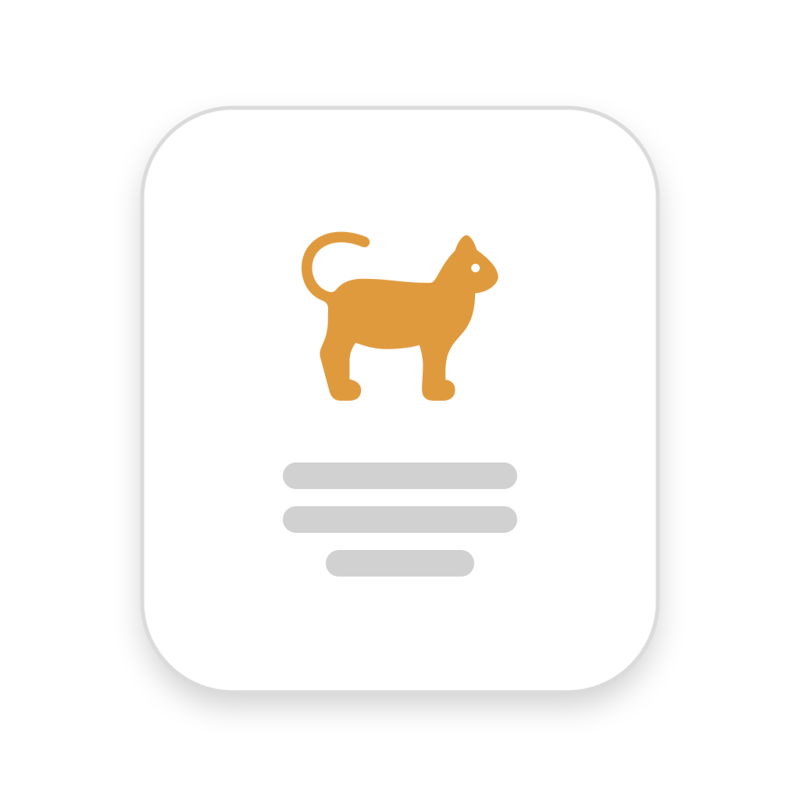
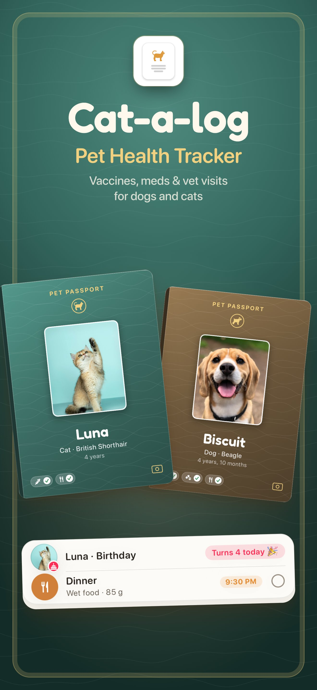
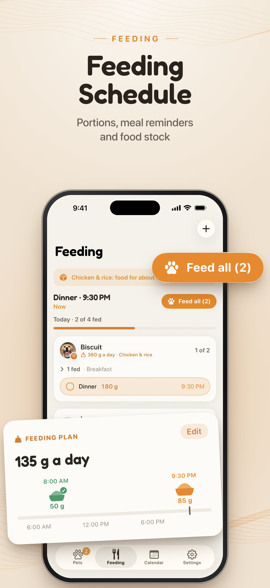
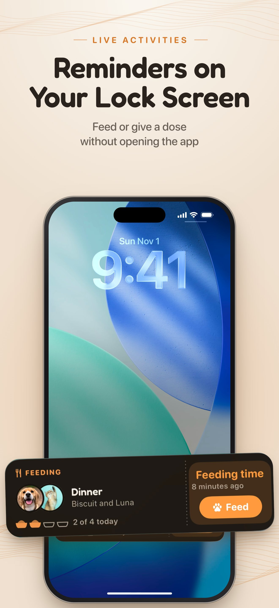
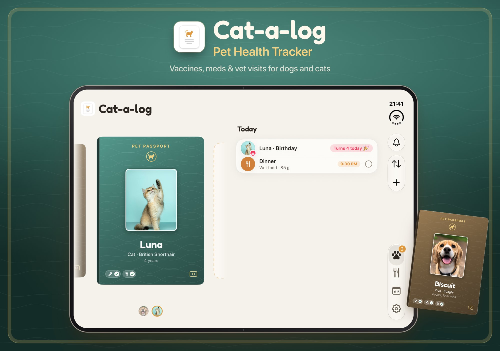

Cat-a-log
A passport for every pet
About
Cat-a-log keeps a dog's or cat's health in one place, and version 1.3 turns it into a real pet passport. Each pet has its own passport cover on the home screen; a tap zooms it open to the pet's pages, where every vaccination is an ink stamp.
Feeding 2.0 plans the daily meals, and Live Activities bring the next meal, dose or vet visit to the Lock Screen and the Dynamic Island, with buttons that stamp them done. On iPhone Duo the passport and its records sit side by side, and partly folded the app reads like a booklet.
Made by an independent developer in Poland, in English, Polish, Spanish, Italian and Traditional Chinese.
Video
Screenshots







Facts
- Platform
- iPhone, iOS 18 or later. Optimized for iPhone Duo.
- Latest version
- 1.3, November 2026
- Price
- Free. Cat-a-log Pro adds unlimited pets, cloud sync, sitter sharing and more widgets, as a monthly or yearly subscription.
- Languages
- English, Polish, Spanish, Italian, Traditional Chinese
- Apple technologies
- Live Activities, widgets, App Intents, SwiftUI, iPhone Duo layouts
Contact
Questions, interviews or more material: